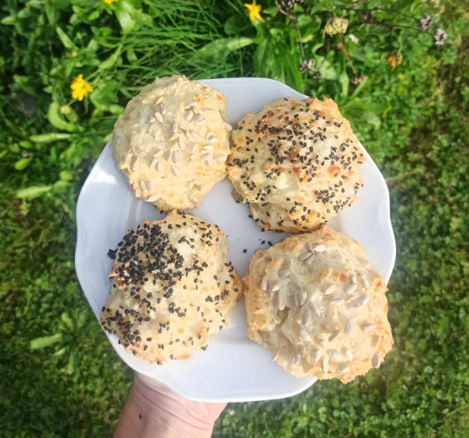

Home
Cottage Cheese Buns

Description
Fresh cottage cheese rolls that can be topped with any seeds, creating a unique, healthy savory pastry each time.
Ingredients
- cottage cheese: 150-200 g
- smooth spelt flour: 160 g
- baking powder
- egg
- salt
- seeds for sprinkling (black sesame, sunflower seeds, pumpkin seeds,...)
Steps
- Mix the flour with the baking powder, add salt, cottage cheese, and eggs. Combine everything and knead the dough by hand.
- Let the dough rest in the bowl for 10-15 minutes, while preheating the oven to 170°C and lining a baking sheet with parchment paper.
- Divide the rested dough into 4 equal-sized rolls, place them on the baking sheet, and sprinkle with the prepared seeds.
- Bake for approximately 30-35 minutes. The baked rolls should be golden on the surface and soft when pressed.